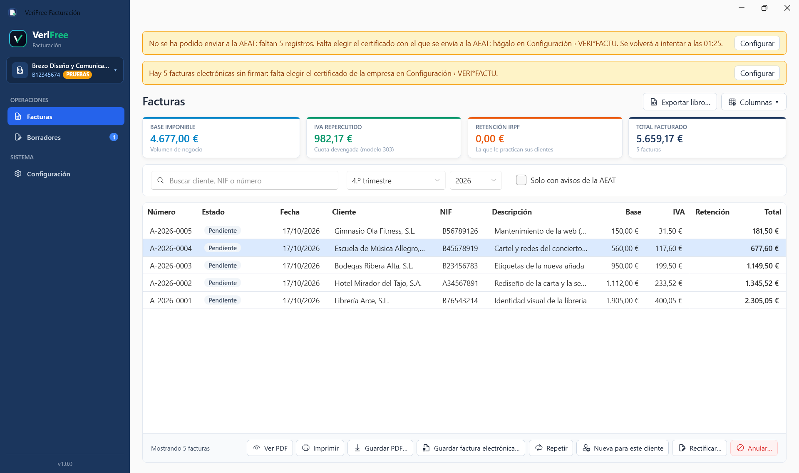

Remisión automática a la AEAT
Emites la factura y VeriFree la envía sola a Hacienda, encadenada a la anterior para que nadie pueda tocarla.
Haces la factura, VeriFree se la manda a Hacienda y todo se queda en tu ordenador: sin nube, sin límite de facturas y con varias empresas a la vez.
¡Hola! Soy Veri. Te ayudo a facturar sin líos con Hacienda.
Un solo archivo para Windows (71 MB): lo descargas y lo pruebas entero en Modo Pruebas. Sin instalar nada, sin registrarte y sin tarjeta.

Con VERI*FACTU, la mayoría de autónomos y pymes van a necesitar un programa adaptado, y lo habitual es pagar una cuota cada mes, para siempre. Creemos que cumplir con Hacienda no debería convertirse en un alquiler de por vida. Por eso VeriFree se paga una vez, tus datos se quedan en tu ordenador y su código es público, como aprendimos del software libre.
Seas autónomo o pyme, VeriFree se encarga de VERI*FACTU y de la factura electrónica obligatoria (Ley Crea y Crece). Tú solo facturas.
Emites la factura y VeriFree la envía sola a Hacienda, encadenada a la anterior para que nadie pueda tocarla.
Cada factura sale también firmada en el formato de la AEAT, lista para cuando sea obligatoria.
Con su número y su validez. Si el cliente acepta, se convierten en factura con un clic.
Lo que facturas cada mes o cada trimestre, preparado de una vez y sin que se duplique ninguna.
El fichero de adeudos para tu banco con las facturas domiciliadas, y la orden firmada de cada cliente.
Un clic y tu asesoría tiene el libro de facturas expedidas en el formato de la AEAT.
Es normal desconfiar de un programa nuevo cuando lo que está en juego es Hacienda. Por eso no te pedimos que nos creas: te damos la forma de comprobarlo.
Cada factura lleva el código QR de la Agencia Tributaria: escanéalo con el móvil y su web te dice si está registrada. VeriFree se la envía al emitirla, directamente desde tu ordenador y con tu certificado, sin pasar por servidores nuestros. (La versión de evaluación no envía nada, así que con ella no se puede.)
Lo que preocupa es que Hacienda te multe por el programa que usas. La ley solo sanciona al usuario que usa un programa sin su declaración responsable, o modificado (LGT, art. 201 bis). La Licencia Oficial la lleva, firmada por su productor, que responde ante Hacienda de que el programa cumple. Tú te ocupas de facturar; que el programa cumpla es cosa nuestra.
Todo está en tu ordenador, no en servidores nuestros, y el programa no necesita conectarse con nosotros para funcionar. Cada factura se archiva además como factura electrónica firmada, en un formato europeo que pueden leer otros programas, en la carpeta que elijas (también una de Google Drive u OneDrive), y el libro registro sale en Excel con un clic. Si VeriFree desapareciera mañana, tu programa seguiría funcionando y tus facturas seguirían siendo tuyas.
Somos afines al software libre y creemos que un programa que maneja tus facturas no debe tener secretos. Por eso su código es público: un asesor, un perito o un inspector puede comprobar línea a línea qué hace y que no permite cajas B ni tocar las facturas emitidas.
Lo normal es pagar entre 180 € y 580 € al año, todos los años. Con VeriFree, 119 € una vez, con el primer año de actualizaciones incluido. Si no renuevas, tu programa sigue funcionando.
119 € + IVA, un solo pago
El programa listo para facturar, con nuestra garantía de productor y el primer año de actualizaciones y soporte.
A medida
Para despachos que llevan la facturación de muchos clientes desde un mismo equipo.
0 €
Para programadores que lo compilan ellos mismos y asumen ser su productor ante Hacienda.
Lo que más nos preguntan, contado claro.
¿Te queda alguna duda? Llámanos y te lo contamos en persona.
VeriFree.exe desde esta misma web, sin registrarte y sin dar ningún dato de pago. Viene preconfigurado en Modo Pruebas con un productor de evaluación: te permite explorar todas las funciones, crear clientes, hacer presupuestos y borradores, emitir facturas simuladas con hash encadenado SHA-256 (no se envían a la AEAT), ver el PDF con código QR y exportar el libro oficial en Excel en tu propio PC. Para emitir facturas con validez fiscal real ante la AEAT en Producción, tan solo necesitarás adquirir la Licencia Oficial (donde nuestra empresa productora, Telytec Ingenieros, S.L., asume la responsabilidad legal ante la AEAT).
Sin alquileres en la nube, con tus datos en tu ordenador y con gente de verdad al otro lado del teléfono si nos necesitas.